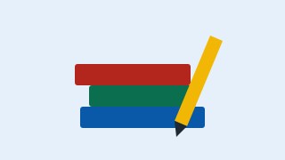
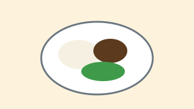
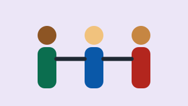

Reforço Escolar
Aulas de português e matemática no contraturno para 400 crianças do ensino fundamental.
Educação
Meta de arrecadação: 72% atingida
Apoiar o Reforço EscolarCada projeto nasce da escuta da comunidade. Escolha como quer participar: doando, sendo voluntário ou divulgando.

Aulas de português e matemática no contraturno para 400 crianças do ensino fundamental.
Educação
Meta de arrecadação: 72% atingida
Apoiar o Reforço Escolar
Refeições diárias e cestas básicas mensais para famílias cadastradas no programa.
Segurança alimentar
Meta de arrecadação: 45% atingida
Apoiar o Prato Cheio
Oficinas de tecnologia, direitos e empreendedorismo para adolescentes de 14 a 18 anos.
Cidadania
Meta de arrecadação: 88% atingida
Apoiar o Jovem CidadãoTransferência via PIX para a chave doe@semearfuturo.org.br. Todas as doações recebem recibo para fins de declaração.
Preencha o formulário de cadastro informando sua área de interesse e disponibilidade.
Aceitamos material escolar, alimentos não perecíveis e livros infantis em bom estado, de segunda a sexta, das 9h às 17h.